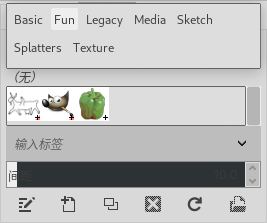

可停靠对话框→笔刷
快捷键：Ctrl+Shift+B
可停靠对话框→笔刷
笔刷对话框可以为绘画工具更换不同的笔刷。
如何快速缩放笔刷尺寸？请参考快捷缩放笔刷尺寸。
笔刷说明
关于笔刷的概念，请参考笔刷的概念。
笔刷本质上是一幅或一组图像，代表画笔单次点击画布所得到的效果。如果按住画笔不松手在画布上拖动，则会产生连续的笔刷轨迹，形成笔刷线条。
工具箱中显示了前景色/背景色，也可以同时显示笔刷，方法请参考工具箱⇒关于前景色和背景色，活动笔刷、图案和渐变。
GIMP提供了多种不同的笔刷，您也可以去网上下载其他人定义好的笔刷(请尊重著作权/版权)，或者创建自己的笔刷，比如，您可以把自己的印章创建成笔刷。
GIMP可以使用MyPaint的笔刷，详细说明请参考工具箱⇒MyPaint笔刷工具。
笔刷分为普通笔刷、彩色笔刷、动画笔刷、参数笔刷四种类型。
普通笔刷：GIMP自带的笔刷多数是普通笔刷，在笔刷对话框中显示为灰度图像。绘画时，会使用工具箱中的前景色。
创建普通笔刷：只需要把一个小的灰度图像保存为.gbr文件，然后把此文件拷贝到个人笔刷文件夹，然后在笔刷对话框中点击刷新按钮即可，不需要重启GIMP。
彩色笔刷：笔刷对话框是显示为彩色的就是彩色笔刷。绘画时，彩色笔刷会使用其在笔刷对话框中显示的颜色，而不是前景色。
创建彩色笔刷：创建一个 RGB图像，创建时在高级选项中“填充”选择“透明”(确保图层有alpha通道)，在图层上绘制笔刷图案和颜色(可以从其它图像复制)，先保存为.xcf文件，然后导出为.gbr文件，把此文件拷贝到个人笔刷文件夹，然后在笔刷对话框中点击刷新按钮即可，不需要重启GIMP。
动画笔刷：笔刷对话框中右下角显示红色小三角形的，就是动画笔刷。使用动画笔刷在画布上绘画时，每一次点击会呈现不一样的效果，点击并拖动画笔会画出一道一直在变化的笔刷轨迹。
创建动画笔刷：待更新
参数笔刷：使用笔刷编辑器创建的笔刷称为参数笔刷。参数笔刷相对简单，其最大的特点就是它是通过笔刷编辑器创建的，所以也可以在笔刷编辑器中修改。
创建参数笔刷：点击笔刷对话框底部的创建新笔刷按钮(
 )就可以打开笔刷编辑器，您可以在笔刷编辑器中创建参数笔刷。详细操作说明请参考笔刷编辑器。
)就可以打开笔刷编辑器，您可以在笔刷编辑器中创建参数笔刷。详细操作说明请参考笔刷编辑器。(个人笔刷文件夹：请参考首选项→文件夹⇒各种文件夹及选项)
笔刷对话框
(快速缩放笔刷尺寸 请参考快捷缩放笔刷尺寸)
对话框中有很多笔刷，点击其中一个即可设置其为当前活动笔刷。
双击一个笔刷会打开 笔刷编辑器。
笔刷的右下角如果带有一个符号(十字、蓝色三角、红色三角)，表示有更多信息可以参考：
十字表示笔刷尺寸为缩小尺寸，鼠标左键点击时，长按一会儿不松手，会显示该笔刷的正常尺寸；
蓝色三角表示笔刷尺寸为正常尺寸；
红色三角表示动画笔刷，鼠标左键点击时，长按一会儿不松手，会显示该笔刷的动画效果；
上面的截图( 可停靠对话框→笔刷 )中，笔刷缩略图列表上方框中的 过滤 表示对笔刷进行分类显示，便于对多种笔刷进行管理。点击框内右侧的(
 )按钮可以选择类别。(可以同时显示多个类别，用逗号分隔)
)按钮可以选择类别。(可以同时显示多个类别，用逗号分隔)上面的截图( 可停靠对话框→笔刷 )中，笔刷缩略图列表下方框中的“Fun,”是当前选中笔刷的类别，GIMP会在这里自动显示选中笔刷的类别。
您可以在下方的“Fun,”框中创建新类别，把指定的笔刷归属到新创建的类别中，方法是选中某个要修改类别的笔刷，然后删除下方的“Fun,”框中的 Fun,，再输入新的类别名称，此时选中的笔刷的类别会改为新创建的类别；然后，点击上方框中的(
)按钮可以选择新创建的类别。您可以删除类别，方法是选中该类别的一个笔刷，然后在“Fun,”处删除名称；某一个类别下笔刷数量删除到0时，类别名称会自动被删除。
笔刷缩略图列表上方框中的 过滤 下拉列表如果选择了一个类型，那么对话框中会只显示该类型的笔刷；如果想显示全部笔刷，只需要展开类型列表然后再次点击类型名称即可(或者，把 过滤 框中内容删除也可达到相同效果)。
例如，下面截图中，在 过滤 处选择了“Fun”，所以对话框中只显示了属于Fun类型的三个笔刷。此时如果想显示所有笔刷，只需要点击 过滤 框内右侧的(
)按钮，然后再次点击“Fun”即可：笔刷分类
间距：连续笔刷之间的距离；数值是笔刷宽度的百分比。
笔刷对话框底部的按钮
(
 )编辑：点击会打开 笔刷编辑器，可以对当前选中笔刷进行编辑。GIMP自带的笔刷只能显示，无法编辑；但您可以复制GIMP自带的笔刷，然后对副本进行编辑。
)编辑：点击会打开 笔刷编辑器，可以对当前选中笔刷进行编辑。GIMP自带的笔刷只能显示，无法编辑；但您可以复制GIMP自带的笔刷，然后对副本进行编辑。(
)新建：点击会打开 笔刷编辑器，可以创建新的参数笔刷。详细操作说明请参考笔刷编辑器。(
 )复制：点击会打开 笔刷编辑器，自动创建当前选中笔刷的副本，您可以在编辑器中修改笔刷参数。详细操作说明请参考笔刷编辑器。
)复制：点击会打开 笔刷编辑器，自动创建当前选中笔刷的副本，您可以在编辑器中修改笔刷参数。详细操作说明请参考笔刷编辑器。(
 )删除：点击会删除当前选中的笔刷。GIMP自带的笔刷无法删除，您创建或复制的笔刷可以删除。
)删除：点击会删除当前选中的笔刷。GIMP自带的笔刷无法删除，您创建或复制的笔刷可以删除。
警告
此命令不仅会删除对话框中的笔刷缩略图，同时还会删除硬盘上笔刷文件夹中的笔刷文件，请慎重操作！
(
 )刷新：重新加载笔刷文件夹。如果您往笔刷文件夹中拷贝了新的笔刷文件，那么点击此按钮就可以把新笔刷加载到笔刷对话框中使用，不需要重启GIMP。(个人笔刷文件夹的位置请参考菜单 编辑→首选项-文件夹→图案 以及 首选项→文件夹⇒各种文件夹及选项)
)刷新：重新加载笔刷文件夹。如果您往笔刷文件夹中拷贝了新的笔刷文件，那么点击此按钮就可以把新笔刷加载到笔刷对话框中使用，不需要重启GIMP。(个人笔刷文件夹的位置请参考菜单 编辑→首选项-文件夹→图案 以及 首选项→文件夹⇒各种文件夹及选项)( )图像：把当前选中笔刷作为图像打开，然后可以对其进行编辑，编辑完成后导出到 个人笔刷文件夹，格式设置为笔刷格式，之后在笔刷对话框中点击刷新按钮(
)就可以使用新笔刷了。导出时注意不要覆盖已经存在的笔刷文件。
{kind=link}
笔刷对话框 弹出菜单
右键点击某个笔刷，会显示弹出菜单：
笔刷对话框弹出菜单
编辑笔刷：编辑选中的笔刷；等同于点击编辑按钮(
)。(不是所有的笔刷都可以编辑)将笔刷作为图像打开：把笔刷当做图像打开编辑；等同于点击图像按钮( )。Basic系列的笔刷无法作为图像打开，因为这些笔刷不是从图像创建的，而是直接用笔刷编辑器创建的。
新建笔刷：创建一个新的参数笔刷；等同于点击新建按钮(
)。复制笔刷：创建当前选中笔刷的副本；等同于点击复制按钮(
)。复制笔刷位置：把被选中的笔刷的路径复制到剪贴板。
在文件处理器中显示：打开您电脑上的文件处理器，显示被选中笔刷所在的目录。如果您近期在创建笔刷，那么这个命令会比较方便。
删除笔刷：删除当前选中笔刷；等同于点击删除按钮(
)。刷新笔刷：重新加载笔刷；等同于点击刷新按钮(
)。矩形：
椭圆：
羽化的矩形：
羽化的椭圆：
待处理
9、10、11、12四个选项的说明等待GIMP官方更新。
剪贴板笔刷
笔刷对话框中列在第一和第二的两个笔刷是剪贴板笔刷，它们是由您执行复制命令时自动生成，内容是您复制的内容。
第一个是蒙版笔刷，可以用来编辑蒙版，即在蒙版上使用此笔刷，用来修改蒙版。(注意不是在图像上使用)
第二个是图像笔刷，可以做为普通的彩色笔刷使用。(在蒙版上也可以使用，但需要您清楚其意义)
这两个笔刷无法修改，再次执行复制命令时就会自动消失，换成新的复制内容。
如果关闭再打开GIMP，它们会显示两个白色方块，内容为空。
如果您想长期保存剪贴板笔刷，可以在剪贴板笔刷仍然存在时点击菜单 编辑→粘贴为→新画笔。此命令实际上是使用剪贴板中的内容创建新笔刷。